Guns Horses & Ships is a multiplayer survival game set in the 18th century. You play as a settler in a vast wilderness where you'll gather resources, find food, craft tools, and build a settlement to survive. Move using the WASD keys. Rotate the camera by clicking and dragging, and scroll to zoom in or out. When you're near something you can interact with, buttons will appear at the top of your screen.
When you first join, you can create an account or play as a guest. Guests can explore and learn the game, but your progress won't be saved between sessions. With an account, you can set a home spawn point by building a tent or house. Your personal inventory is lost when you die, but anything stored in tents or houses persists.
A task list in the corner of your screen guides you through the basics. Complete tasks to earn coins and learn the game's systems. Your first priorities should be finding food and gathering vines from grass patches to craft rope, which you'll need for tools and fishing.
Your hunger drains continuously while playing. Food in your backpack is consumed automatically - you don't need to click anything. The status bar on the right side of your screen shows how many minutes until you start starving.
Food can be found in several ways. Apples grow on apple trees - walk up to a tree and open its inventory. Mushrooms appear randomly when you stop on grass - a gather button will pop up. Vegetables are visible in the world and can be gathered by walking up to them. You can also find vegetable seeds and plant them from the build menu. Fish must be cooked before eating - raw fish cannot be consumed.
| Food | Duration (100% quality) | How to Obtain | |
|---|---|---|---|
| Apple | 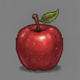 |
10 minutes | Apple trees |
| Mushroom | 10 minutes | Foraging on grass | |
| Vegetables | 20 minutes | Gathering or planting | |
| Roasted Vegetables | 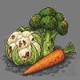 |
40 minutes | Cook vegetables |
| Apple Tart | 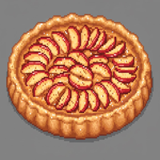 |
30 minutes | Buy from market |
| Cooked Fish | 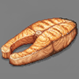 |
60 minutes | Cook raw fish |
| Cooked Meat | 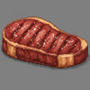 |
80 minutes | Cook raw meat |
| Raw Fish | 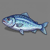 |
Cannot eat | Fishing |
| Raw Meat | 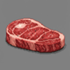 |
Cannot eat | Hunting |
Duration scales with quality. A 50% quality apple lasts 5 minutes instead of 10.
Carrying different types of food slows your hunger. Each unique food type gives a 10% bonus, up to 40% with four different types. For example, carrying apples, cooked fish, roasted vegetables, and mushrooms together will make your food last nearly twice as long as carrying just one type.
Raw fish and vegetables can be cooked at campfires or houses. Place the raw food and some firewood in the structure's inventory, and after one minute the food will be cooked. Cooked food lasts much longer - cooked meat provides 80 minutes of sustenance compared to raw food which cannot be eaten at all.
When you run out of food, you begin starving. A warning appears showing how long until you die. If you starve for six minutes without finding food, you die.
Deer and bears roam the wilderness. Deer are passive and will flee if you get too close or fire a shot nearby. Bears are extremely dangerous - they spawn from bear dens and will aggressively chase you if you enter their territory. Bears attack in melee range and are fast, so keep your distance and use a rifle.
Killing a deer or bear drops raw meat. Get close to the corpse and interact with it to collect the meat before the body despawns after about two minutes. Raw meat cannot be eaten - you must cook it at a campfire or house with firewood. Cooked meat provides 80 minutes of sustenance, making it the most nutritious food in the game.
All food has a quality rating that affects how long it lasts. Higher quality food provides more minutes of sustenance. Different regions of the world have different resource qualities - exploring further from where you started may lead you to better or worse quality food sources.
Pine
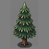
and apple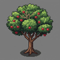
trees grow throughout the wilderness. Chop down a tree with an axe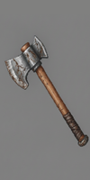
and it drops a log. Each log can be harvested five times, giving you either firewood (using an axe) or planks (using a saw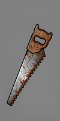
). Firewood is used for cooking, while planks are used for building.| Resource | Tool | Products | |
|---|---|---|---|
| Pine Tree | Axe | Pine Plank 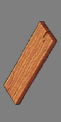 , Pine Firewood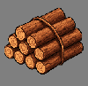 |
|
| Apple Tree | Axe | Apple Plank 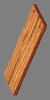 , Apple Firewood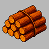 |
Four types of stone can be mined with a pickaxe
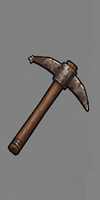
: limestone, sandstone, clay, and iron. Limestone and sandstone are common building materials. Clay can be processed into tiles - it takes one minute at a tileworks or five minutes at a campfire. Iron is rare and only found in high mountains - it must be smelted into ingots at an ironworks before use.| Stone | Location | Processed Form | |
|---|---|---|---|
| Limestone | 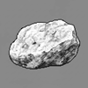 |
Common, all elevations | Chiseled Limestone 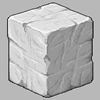 |
| Sandstone | 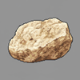 |
Common, all elevations | Chiseled Sandstone 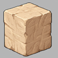 |
| Clay | 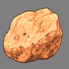 |
Common, lower areas | Tile 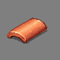 |
| Iron | 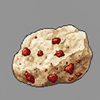 |
Rare, mountains only | Iron Ingot 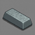 |
Most harvesting actions take 10 seconds. Walk up to a resource and a button will appear at the top of your screen. Each harvest uses one point of your tool's durability. When durability reaches zero, the tool breaks. Higher quality tools last longer - a quality 50 axe can chop 50 times before breaking.
All resources have a quality rating from 1 to 100. Quality affects how long food lasts, how many uses you get from a tool, and how much an item sells for. Different regions of the world have different quality ranges. You can pay a trapper NPC to reveal the quality of resources in your area.
Click the Build button at the top of your screen to open the build menu. Select a structure and click to place it. Simple structures like tents, campfires, crates, carts, walls, roads, and boats build instantly when you have the materials. Larger structures like houses, markets, and worker buildings require placing a construction site first, then gathering materials and using a hammer
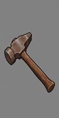
to complete the build.Tents
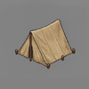
and houses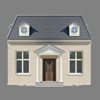
store your items and serve as respawn points - you can only own one house at a time. Campfires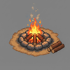
cook food using firewood. Markets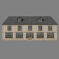
enable trading when paired with a dock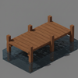
, which must be placed on a shoreline with deep water ahead. Worker buildings like bakeries, woodcutters, and miners can be sold to NPC proprietors who will run them automatically.| Structure | Purpose | Build Type | |
|---|---|---|---|
| Tent | Storage, respawn point | Instant | |
| House | Storage, respawn, cooking | Construction site | |
| Campfire | Cooking food | Instant | |
| Crate | 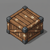 |
Portable storage (100 slots) | Instant |
| Market | Trading hub | Construction site | |
| Dock | Ship trading | Construction site | |
| Wall | 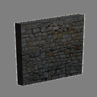 |
Defense | Instant |
| Road | 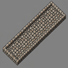 |
2x movement speed | Instant |
| Outpost | 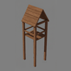 |
Lookout tower | Instant |
All structures decay over time based on the quality of materials used to build them. Higher quality materials make structures last dramatically longer - a quality 50 structure lasts about 11 days, while a quality 15 tent lasts about 2 days. Campfires decay quickly and only last a couple of hours. When a structure fully decays, it becomes a ruin and disappears after an hour. Roads never decay.
Most structures require planks, chiseled stone, or tiles. Planks come from processing logs with a saw. Chiseled stone is made by using a chisel on raw limestone or sandstone. Tiles are made by cooking clay with firewood at a tileworks or campfire.
Open your backpack and drag one item onto another to combine them. Combining takes 6 seconds and you must stand still.
| Result | Recipe | Time | |
|---|---|---|---|
| Rope | 2 Vines 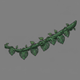 |
6 sec | |
| Fishing Net | 2 Rope | 6 sec | |
| Improvised Tool | 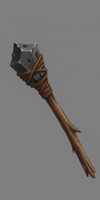 |
Limestone + Rope | 6 sec |
To make chiseled stone, you need a chisel
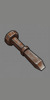
. Select the chisel in your inventory, then click on stone. Chiseling takes 6 seconds and uses one point of your chisel's durability.| Result | Input | Time | |
|---|---|---|---|
| Chiseled Limestone | Limestone | 6 sec | |
| Chiseled Sandstone | Sandstone | 6 sec |
When you craft a tool, its quality is the average of the materials used. Higher quality tools last longer before breaking. All crafted tools have a minimum quality of 25, so even low-quality materials will produce a usable tool.
Combat happens automatically when enemies are nearby. If you have a rifle
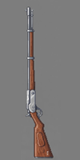
with ammo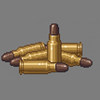
, you'll shoot every 6 seconds. Each shot uses one ammo and one rifle durability. When durability reaches zero, the rifle breaks. Your shooting range is normally 10 units but can extend to 15 if you have height advantage over your target.Your base hit chance is 35% and can reach 80% maximum. Standing higher than your target gives 15% bonus per unit of height - this is the biggest accuracy factor. Getting very close (under 4 units) also dramatically improves accuracy. Rifle quality provides a small bonus: quality 100 adds 10%, quality 50 is neutral, quality 1 subtracts 10%.
Bandits spawn from tents scattered throughout the wilderness. They detect you at 15 units and will chase and shoot. Destroying a bandit's tent prevents them from respawning. Bandit tents contain loot like coins and ammo - interact with the tent to access its inventory.
Brown bears spawn from bear dens and are extremely dangerous. They attack in melee range and move fast. Keep your distance and use a rifle - if a bear reaches you, it will maul you quickly. Bears flee from structures, so buildings offer some protection.
When you die, you lose everything in your inventory including your rifle, tools, and coins. Your structures remain - anything stored in tents or houses is safe. After a short countdown, you can respawn at your home, a random location, or near a friend.
Artillery
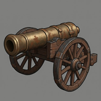
is a powerful cannon that can be towed by horses. To load it, click the artillery button and place shells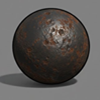
inside its inventory. To fire, click the man artillery button to take position behind the cannon. Use A and D to rotate, then press F to fire. Artillery has a 28-unit range and 12-second cooldown between shots. It can destroy enemy faction structures and bandit camps.Build a market to create a trading hub. Markets start empty - you must stock them by selling items to them, or set up automated production with worker NPCs. Open a market's inventory to buy and sell. Prices depend on the item's quality and current stock levels. Low stock means higher prices, high stock means lower prices.
Stock a market by selling items to it - this adds them to the market's inventory and gives you coins . You can also build worker structures nearby and sell them to proprietors. When you sell a structure like a woodcutter or miner to a proprietor, you receive 10 coins and a worker NPC spawns to gather resources and sell them to your market automatically. Once sold, the structure stops decaying but you lose access to its inventory.
Nine structure types can be sold to proprietors: bakery, woodcutter, gardener, miner, stonemason, blacksmith, ironworks, tileworks, and fisherman. Each produces different goods - woodcutters deliver planks and firewood, miners deliver stone, bakers convert apples to tarts. Build these near your market, then click the Seek Proprietor button to sell them.
Build a dock on a shoreline and place a market within 20 units. Trade ships arrive periodically and automatically trade with your market. Ships buy your materials (stone, planks, firewood, rope) leaving only 10 of each type behind. Ships also restock tools, weapons, and horses at fixed prices - 60 coins for tools, 200 for rifles and horses.
Use the pause shipments button in the market interface to control ship trading. Allow shipments if you want cheap tools and weapons - the increased supply lowers prices. Pause shipments if you want to keep your materials for building or crafting.
Deer and bears roam the wilderness and can be hunted for meat. Deer spawn from special trees and are passive - they flee when you approach within 10 units, hear gunshots within 50 units, or see man-made structures within 10 units. If a deer spots a bear, it flees at 25 units. When killed, a deer corpse remains for about 2 minutes before despawning - interact with it quickly to collect raw meat. After harvesting a deer, that tree won't spawn another for about an hour.
Brown bears spawn from bear dens and are extremely aggressive. They chase anything that moves - players, bandits, even deer. Bears move at 2.5 units per second, faster than you can run, and their melee attacks are nearly instant kills. However, bears will flee from buildings and structures, so staying near your settlement offers protection. Like deer, bear dens have an hour cooldown before spawning a new bear.
Bandits live in camps scattered throughout the world, typically with 1-3 tents and sometimes an outpost. They spawn when you get within 50 units of their tent and will chase you up to 30 units from home. Bandits carry rifles and shoot every 6 seconds with the same accuracy rules as players - about 35% base chance, up to 80% with height advantage.
Bandits return to their tent if you retreat beyond 30 units. If you kill a bandit, they respawn after 2 minutes as long as their tent stands. To clear a camp permanently, destroy the tents. Bandit tents contain valuable loot including coins, ammo, and sometimes tools - interact with the tent to access its inventory. Artillery can destroy bandit camps from a safe distance.
Nine types of worker NPCs can run your structures automatically. Build a worker structure near your market (within 20 units), then click the Seek Proprietor button. You'll receive 10 coins and lose control of the structure, but a worker spawns who gathers resources and sells them to your market. The structure stops decaying once sold.
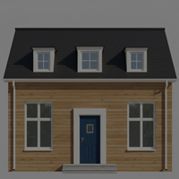
Woodcutter - Finds pine trees within 50 units, chops them down, and processes each log into firewood and planks. Delivers materials to your market.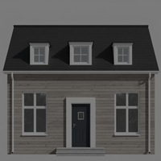
Miner - Searches for rocks within 50 units and mines them 5 times per rock. Delivers raw stone to your market - limestone, sandstone, clay, or iron depending on what's nearby.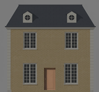
Gardener - Plants up to 23 vegetables in rows, waits 30 minutes for harvest, then collects and sells them. During downtime, gardeners plant trees nearby (mostly pine, some apple).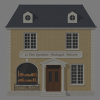
Baker - Collects apples from nearby gardens, brings them to the bakery, and bakes them into apple tarts. Apple tarts sell well and provide 30 minutes of food each.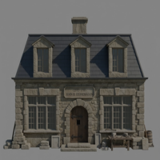
Stonemason - Collects raw stone from your market, chisels it (6 seconds per piece), and sells the chiseled stone back. Turns your miners' output into building materials.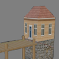
Fisherman - Walks to nearby water, catches 8 fish, returns to cook them with firewood, and sells cooked fish to your market. Cooked fish provides 60 minutes of food.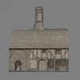
Ironworker - Collects iron ore and firewood from your market, smelts the iron into ingots at the ironworks, and sells the ingots. Iron can only be smelted at an ironworks, not a campfire.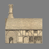
Tileworker - Collects clay and firewood, fires the clay into tiles, and sells them. Tiles are required for building houses and most worker structures.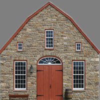
Blacksmith - Collects iron ingots and firewood, forges them into metal parts, and sells the parts. Parts are needed for artillery.Trappers live in tents in forested areas throughout the world - one per region. Walk up to a trapper and for 5 coins, they'll tell you the quality ranges of all resources in that area: trees (pine, apple), rocks (limestone, sandstone, clay, iron), and gatherables (vines, mushrooms, vegetables, seeds, fish, deer, bears). This helps you find regions with higher quality materials worth the travel.
Merchants appear on docks when trade ships visit. They can tell you when the next ship will arrive and explain how dock trading works. Ships arrive approximately every 30 minutes at functioning docks. The merchant stays on the dock between ship visits, providing a visual indicator that your dock is working.
Horses are the fastest way to travel on land. Build one from the build menu using 1 vegetable. Walk within 2 units and click Mount Horse - mounting takes about 1 second. While mounted, you move at 1.5 units per second, 50% faster than walking. Press W to accelerate, A/D to turn. Horses cannot move backward - the S key slows you down instead of reversing.
Roads double your speed to 3 units per second. Steep slopes (over 50 degrees) reduce your speed dramatically but won't completely stop you. Dismounting requires relatively flat terrain nearby - you can't jump off on a cliff face.
Horses can tow carts and artillery. Approach what you want to tow while mounted and it attaches automatically. Towing an empty cart reduces your speed by 10%. A cart loaded with a crate reduces speed by 33%. Artillery also reduces speed by 33%. Roads help offset these penalties. Turning while towing is slower (40-50% reduction) and requires forward motion - you cannot spin in place.
Carts are mobile storage that can be towed by players on foot or by mounted horses. Build one using 1 plank. Carts can hold one crate at a time, providing 100 inventory slots for hauling materials.
Players on foot can tow carts but move slowly - empty carts reduce speed by 10%, loaded carts by 50%. You must move forward to turn while towing. Horses handle carts better: only 33% speed penalty when loaded, compared to 50% on foot. Roads double your towing speed whether walking or mounted.
To load a crate onto a cart, approach the crate while near the cart. To unload, the crate drops behind the cart onto valid terrain.
Three boat types let you cross water. All use WASD controls - W accelerates forward, S reverses, A and D turn. Unlike horses, boats can move backward. Boats drift slowly to a stop rather than braking instantly.
Rowboat - The basic boat moves at 1 unit per second (walking speed). It can operate in shallow water right up to the shore edge. Full rotation takes 12 seconds. Build cost: 1 plank.
Sailboat - Faster at 1.5 units per second, matching horse speed. Requires water at least 0.3 units deep, so you'll need to find a slightly deeper spot to board. Turns slower - 16 seconds for full rotation. Build cost: 1 plank.
Ship - The largest vessel at 1.25 units per second. Requires deep water (1.5 units depth) and has the slowest turning at 20 seconds per rotation. Best for crossing open water. Build cost: 1 plank.
To exit a boat, you must stop completely near land or a dock. The game checks 8 points around you for valid dismount locations. Docks let you disembark directly onto the platform even when the water below is deep.
Artillery can only be towed by horses - players on foot cannot move it. While mounted, approach artillery and it attaches. Towing reduces your speed by 33% with roads providing a 2x bonus. Your turn rate drops by 50% when towing artillery.
To operate artillery, you must dismount and click Man Artillery. See the Combat section for firing details. When done, step away and remount your horse to continue moving.
Roads double movement speed for all land transportation - walking, horses, and towing. A horse normally moves at 1.5 units per second but travels at 3 on roads. Even a horse pulling a loaded cart moves faster on roads than an unloaded horse off-road.
Roads are built using 1 chiseled limestone each and never decay. Connecting your settlement to distant resources with roads is one of the best investments you can make.
The world is procedurally generated with large continents separated by ocean. Continents are roughly circular landmasses about 500 units in radius, spaced approximately 2000 units apart. Between continents lies open ocean with a depth of 30 units below the surface. Beaches form the transition between land and water, with shallow areas near shorelines.
Elevation determines what you'll find. Beaches and low coastal areas (below 7.5 units elevation) have sand and limited resources. Most trees, rocks, and wildlife spawn on elevated land between 7.5 and 22 units high. Higher elevations become rocky with sparser vegetation. Iron ore is most common in mountainous terrain.
Two factions divide the world: Southguard controls territory south of the equator (negative Z coordinates), while Northmen control the north (positive Z coordinates). When you create an account, you choose a faction and spawn in your faction's territory.
Faction determines your shirt color - maroon for Southguard, dark blue for Northmen. You can only set home spawn points within your faction's territory. Structures you build in enemy territory can be attacked by opposing faction members. Artillery is particularly effective for destroying enemy settlements.
Guests spawn randomly and have no faction allegiance. Changing factions is possible but has a cooldown and may reset your spawn point.
Resource quality varies dramatically across the world. Each region (chunk) has fixed quality ranges for different resources - one area might have excellent pine but poor limestone, while a nearby region has the opposite. Quality ranges from 1 to 100 and affects how long tools last, how much food sustains you, and how much items sell for.
The most important factor is distance from the coast. Resources found deep inland on continent centers can be 20-30 quality points higher than those near beaches. This continent bonus makes exploring toward the interior worthwhile despite the longer travel times.
Trappers scattered throughout the wilderness will reveal quality ranges for 5 coins. Use this information to find regions worth settling. A settlement built near quality 80+ resources will produce dramatically better goods than one stuck with quality 30 materials.
The world spans 100,000 units in each direction - far more than you could ever explore. The chunk system loads terrain and objects as you travel, with about 21 chunks visible around you at any time. Each chunk is 50 units across.
There are no invisible walls at the world's edge, but the procedural generation ensures you'll always find more ocean and continents in any direction. The world is persistent across sessions - structures you build remain until they decay or are destroyed.